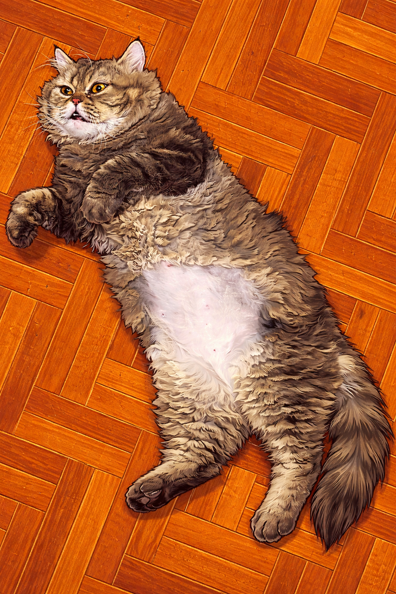

- 1. Recommend a Airpod.
- 2. Recommend a Garmin Smartwatch.
- 3. Recommend a coffee bean (anaerobic process).
- 4. Recommend a claude .
- 5. Recommend a cat

Apple AirPods combine advanced miniaturization, acoustic engineering, and computational audio. Key design elements include:Micro-Architecture: They pack custom chips (like the H2), lithium-ion batteries, and up to two MEMS microphones for voice isolation and real-time noise cancellation into a tiny, lightweight body.Acoustic Vents & Sensors: Carefully engineered meshes and vents manage airflow to prevent resonances, while skin-detect sensors and accelerometers allow for tap gestures and auto-pause.Spatial Audio & Fit Testing: Custom tuning using built-in sensors and proprietary software optimizes frequency delivery to each user's ear structure.

The Garmin Forerunner 165 is an entry-level GPS running smartwatch featuring a vibrant 1.2-inch AMOLED touchscreen, lightweight design (39g), and extensive training metrics. It offers up to 11 days of battery life, built-in multi-GNSS tracking, wrist-based heart rate, and Garmin Pay

Anaerobic (oxygen-free) coffee processing involves fermenting harvested coffee cherries or depulped beans in sealed, airtight containers. This method—heavily inspired by winemaking—forces microbes to break down sugars without oxygen, resulting in complex, fruit-forward, and wine-like flavor profiles with a creamy mouthfeel

Anthropic's Claude Engineering and Claude Design are specialized tools for software and visual creation. Claude Code acts as a command-line assistant to build or edit codebases, while Claude Design is a visual platform generating interactive prototypes and presentations using real code and design systems

are known for their luxurious long coats, flat (brachycephalic) faces, and sweet, calm temperaments. They require high-maintenance care, including daily brushing to prevent mats, routine eye wiping, and a lifespan averaging 10 to 15 years with proper veterinary care